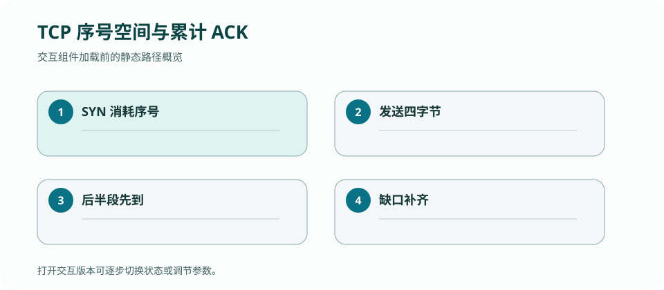

CS 168 · LECTURE 12 · 2026-10-06 · 传输
可靠传输不是几个 if：TCP 把握手、收发窗口、乱序缓存、关闭与定时器组合成一个持续演化的状态机。
版本快照：Fall 2026 官方课表与在线教材，核对日期 2026-09-02；官网仍标注 under construction，日期与政策可能变化。
历史证据边界：PointBreaker 仓库只用于复盘 invariant 与 bug，不代表 Fall 2026 当前提交接口。
为什么每个看似局部正确的 TCP 处理函数，组合后仍可能破坏连接？
客户端发送 SYN(x)，服务端返回 SYN(y)+ACK(x+1)，客户端再 ACK(y+1)。前两次交换证明双方都能收发，并同步两个独立初始序号。只有看到可接受 ACK 后，客户端才能从 SYN_SENT 进入 ESTABLISHED。
历史实现的 connect 构造 SYN、使用 ISS、入重传队列并转入 SYN_SENT；handle_synsent 校验 ACK 范围后设置 rcv.nxt、snd.una 和 window。这组更新必须作为一次状态转移理解。
TCP 序号是模 \(2^{32}\) 的环，不可用普通整数大小比较跨回绕值。历史代码的 |PLUS|、|LT| 等运算符把比较限制在半个序号空间内，体现 RFC 的 serial number arithmetic。
接收窗口判断要区分零长度 segment、零窗口和有 payload 的重叠。边界错误常只在 segment 末端刚好等于窗口边缘或序号回绕时出现，因此 tiny tests 要覆盖端点。
接收 segment 先做可接受性检查，再入按序号排序的队列。只有队首覆盖 rcv.nxt 时才能交付；若从更早序号开始但尾部跨过 nxt，要裁掉已接收前缀。遇到真正缺口则停止，不能越过洞把后续数据交给应用。
历史提交从“in-order accepting”到“out-of-order accepting”再到 refactor，说明正确抽象不是为每个测试打补丁，而是统一维护连续前缀不变量。
被动关闭走 ESTABLISHED→CLOSE_WAIT→LAST_ACK→CLOSED；主动关闭走 FIN_WAIT_1/2，交叉 FIN 可能进入 CLOSING，最后 TIME_WAIT。FIN 也占序号，必须等前序数据发完再发送。
你的历史实现把 Stage 8 重传与 Stage 9 RTT 估计落在 RetxQueue 上，但最后版本的超时分支只执行 min(rto, MAX_RTO)，没有实现 spec 要求的“每次超时将 RTO 翻倍”。提交记录也只写到 Stage 9 的部分测试。这个未闭合点很适合重新用可观察不变量验证。
TCP 正确性来自多个控制块状态的同步演化，单个公式不足以表达。

为主动关闭画状态图，分别处理“ACK 先到”“FIN 先到”“FIN+ACK 同到”三种顺序，标注 FIN 占用的序号。
检查：为什么重传过的 segment 通常不能提供可靠 RTT 样本？
发送端至少跟踪 SND.UNA、SND.NXT、SND.WND 与 retransmission queue；接收端跟踪 RCV.NXT、receive window 与 out-of-order queue。连接状态（SYN_SENT/ESTABLISHED/FIN_WAIT…）决定哪些事件合法，但不能替代序号空间。
序号属于模 \(2^{32}\) 的环；跨回绕比较必须使用 serial-number arithmetic，而非普通无界整数大小关系。
检查：一个 ACK 合法推进 SND.UNA 后，哪些状态通常要共同更新？
| Event | Client state / send space | Server state / receive+send space | Output | 必须保持 |
|---|---|---|---|---|
| client active open | CLOSED→SYN_SENT；UNA=x, NXT=x+1；SYN 入 retx | LISTEN | SYN(seq=x) | SYN 占一个序号且可重传 |
| server receives SYN | 等待 | LISTEN→SYN_RECEIVED；RCV.NXT=x+1；UNA=y,NXT=y+1 | SYN(y)+ACK(x+1) | 两个方向有各自 ISS |
| client receives SYN+ACK | 确认 x+1；UNA=x+1；设 RCV.NXT=y+1；→ESTABLISHED | 等待 final ACK | ACK(y+1) | 只接受落在发送空间内的 ACK |
| server receives ACK | ESTABLISHED | UNA=y+1；SYN 从 retx 移除；→ESTABLISHED | 连接可双向传数据 | 状态转换与 queue/timer 同步 |
检查：客户端发送 SYN(x) 后 SND.NXT 为什么是 x+1？
| Before | Event | Transition | After / output |
|---|---|---|---|
| RCV.NXT=500，window=[500,800)，OOO=[] | [650,750) 到达 | 在窗口内但有洞，插入排序队列 | NXT=500，OOO=[[650,750)]，ACK 500 |
| 同上 | [450,600) 到达 | 裁掉已在窗口左侧的 [450,500)，交付 [500,600) | NXT=600，OOO 仍有 [650,750)，ACK 600 |
| NXT=600 | [600,680) 到达 | 交付 [600,680)，再合并/裁剪 OOO 重叠并消费至 750 | NXT=750，OOO=[]，ACK 750 |
实现中的关键不是 if 的数量，而是每次 event 后“应用已见字节恰好是连续前缀、queue 中没有可立即消费的头部”这个不变量。
检查：第二步为什么不能把 [450,600) 整段丢弃为 duplicate？
收到合法 SYN+ACK 后若只设为 ESTABLISHED，却不推进 SND.UNA、不从 retx queue 移除 SYN、不设 RCV.NXT，定时器会继续重传已确认 SYN，后续接收序号也没有基准。状态名不是事实本身；它是多份 sequence/timer/queue state 已同步后的摘要。
< 看似一直通过。0xffffffff 的已发送字节之后，下一个合法序号可能是 0；普通整数会把 0 判为“很旧”。handle_synsentRCV.NXT 的连续段。RetxQueuePointBreaker/transport 是历史学习证据。Fall 2026 Project 3 目前仍未发布，因此本章不声称接口兼容。
检查：FIN 已发送但尚未确认，它应出现在哪里？
检查：timeout 后 RTO 应如何变化？
检查：TIME_WAIT 最关键的两个目的是什么？
必须把 state enum、sequence space、queue 与 timer 作为一组共同演化的 state，而不是四段互不相关的代码。
正文是 CourseStack 的中文解释与重新绘制的教学例子；官方页面负责课程原始定义，历史仓库只提供你的实现证据。